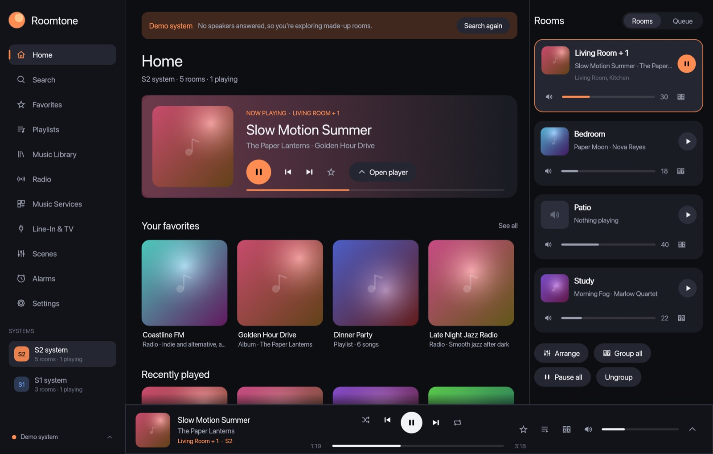
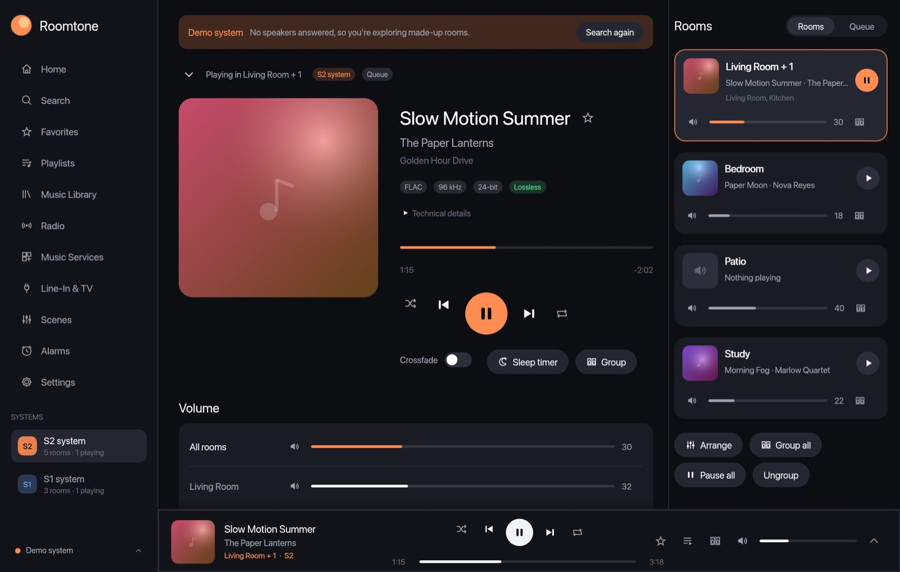
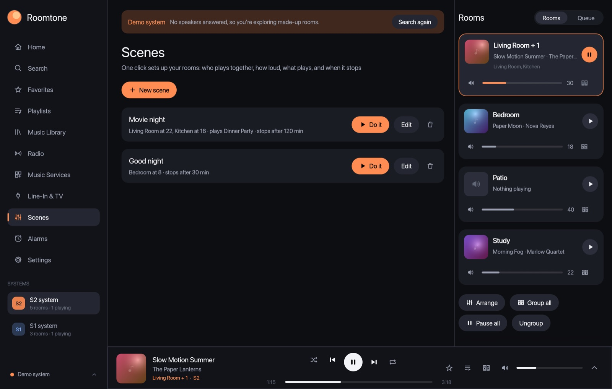

One controller for every Sonos speaker, old or new.
Roomtone controls S1 and S2 systems side by side, in one app, on your Mac, Windows PC or Linux computer. No account, no ads, nothing sent about you.
macOS (Apple silicon), Windows 10/11 and Linux. English, German, French, Spanish, Italian and Dutch.

Your older speakers are still good.
S1 speakers keep working, but they can't share a system with S2 ones, so most people end up with two apps, two queues and two ways of doing the same thing. Roomtone finds both and shows them together.
Rooms from the two sides can even play the same music together with Play along. They're separate systems, so expect them about a second apart: great for different rooms, not for two speakers in the same room.
Everything you do every day
Control your speakers directly over your home network.
Both generations in one place
S1 and S2 systems are found automatically and shown side by side. Software updates stay on the right side: S1 gets S1 software.
Rooms and groups
Group and room volume, saved groups like "Downstairs", group all, pause all.
Music from everywhere
Your speakers' library, folders on this computer, favorites, playlists, internet radio, podcasts, the Internet Archive and streaming services. One search box covers them all.
Scenes
One click sets up a set of rooms: who plays together, how loud, what plays and when it stops. "Movie night" is a button.
Playback that goes further
Queue editing, shuffle, repeat, crossfade, sleep timer, line-in and TV inputs, alarms and room sound settings.
Backup and restore
Save your favorites, playlists and alarms, and export playlists as M3U, PLS, XSPF or CSV to move between S1 and S2 or between apps.
When something's wrong
A read-only check for "can't find my speakers" gives plain advice, shows whether each room is wired or wireless, and tells you which speakers could move to S2.
Podcasts that remember
Skip back and forward, pick up where you stopped, and keep a listening history that lives only on your computer.
Made for everyone
Light, dark or automatic. Keyboard friendly, with names for screen readers such as VoiceOver. Six languages.
Now playing, without the clutter
Album art, the queue, volume for the group and for each room, all on one page.
- Queue you can edit: add, remove and reorder.
- Lyrics that follow the song, if you switch them on (experimental, off by default).
- Try it without speakers. A demo system with made-up rooms lets you explore everything.

Scenes: one click, whole house
Choose which rooms play together, how loud, what plays and when it stops. Start a scene from a button on Home, from the command line, or by asking an assistant.

For scripts and AI assistants too
Roomtone can run without a window and be controlled from the command line, or by an AI assistant through MCP. The assistant link is off by default, with a look-only mode and its own switch for each kind of change.
roomtone play
roomtone volume 30 --room Kitchen
roomtone scene "Movie night"
roomtone backup favorites.jsonWorks with Stream Deck, Shortcuts and your own scripts. How to set it up.
Private by design
There are no ads, no accounts of its own, no telemetry and no call-homes. Roomtone talks to your speakers on your own network, and you can run it completely offline.
- Your settings, history and sign-ins stay on your computer.
- The check for new versions is off until you switch it on, and sends nothing about you.
- Open source, under the MIT or Apache 2.0 licence, so you can read every line.
New, and honest about it
Roomtone is young. It has been tried on real S1 Connect:Amps and S2 speakers, and the rest is tested on a built-in demo system. If you have a speaker it hasn't met yet, a report is the most useful thing you can send.
Questions
Does it replace the Sonos app?
For everyday listening, yes. Setting up new speakers, Wi-Fi set-up, Trueplay tuning, surround and sub set-up, and voice assistants stay in the speaker maker's own app.
Do I need an account?
No account for Roomtone. If you want a streaming service, you sign in to that service from Roomtone as you would anywhere else.
Which computers does it run on?
macOS on Apple silicon, Windows 10 and 11 (64-bit), and 64-bit Linux, with a .deb, an .rpm and a plain archive. There is also a Homebrew cask for macOS.
My computer warns me when I open it. Is that normal?
Yes, for now. Roomtone isn't signed by Apple or Microsoft yet, so macOS and Windows ask you to confirm the first time. The download page shows the few steps, and every download has a checksum so you can check it's the file the project published.
Will it work on my phone?
Roomtone is a desktop app today. A phone-friendly remote is on the roadmap.
Which speakers work?
Sonos speakers on S1 (software 11.x) and S2 systems. IKEA SYMFONISK speakers are Sonos hardware and should work too, but none has been tried yet, so reports are welcome.
Is it affiliated with Sonos?
No. Roomtone is an independent project. It isn't made, endorsed or supported by any speaker maker or music service, and their names and trademarks belong to their owners.